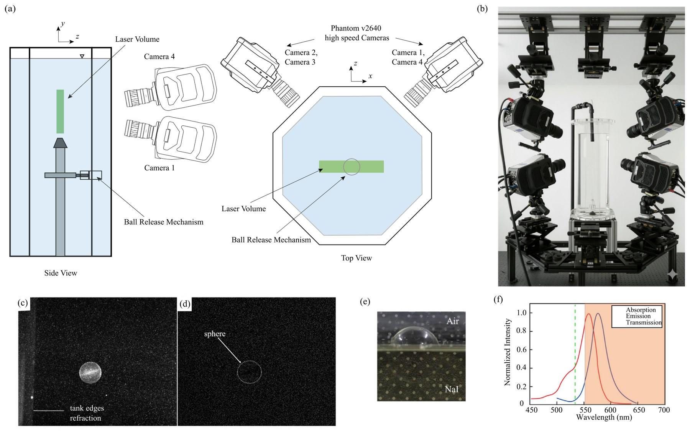
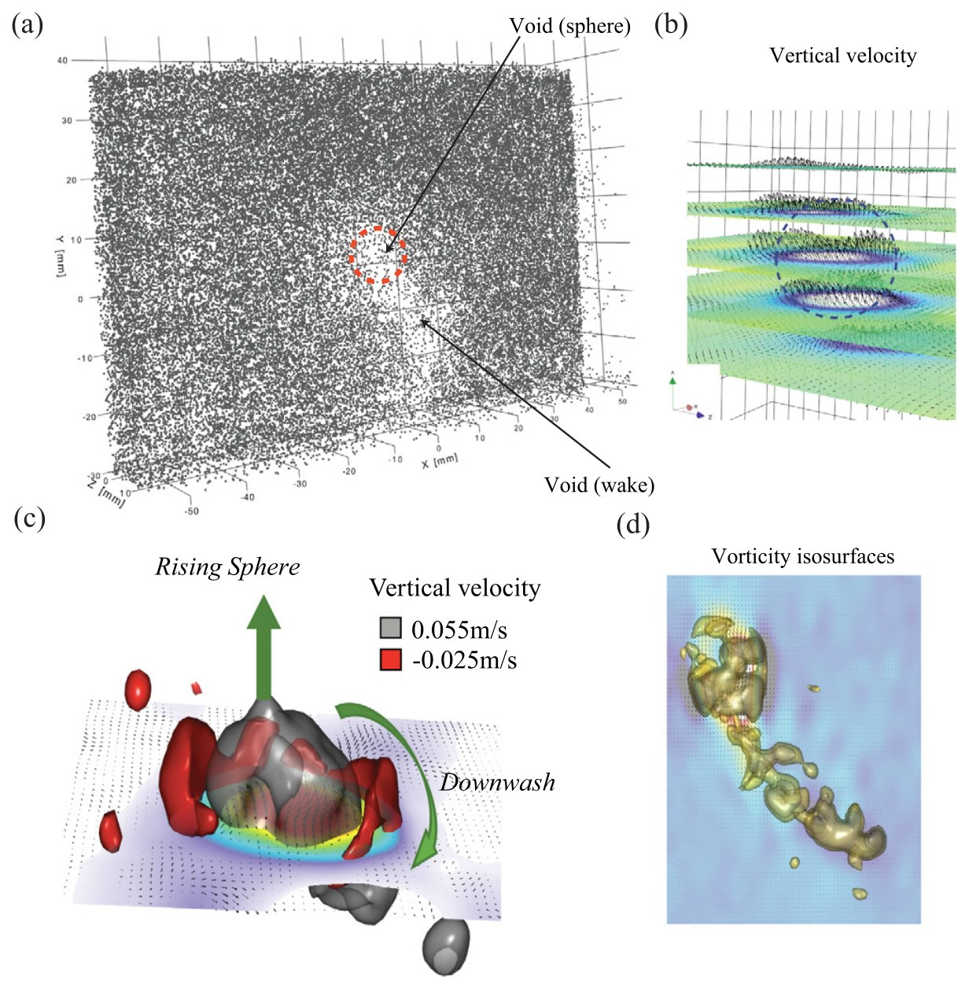
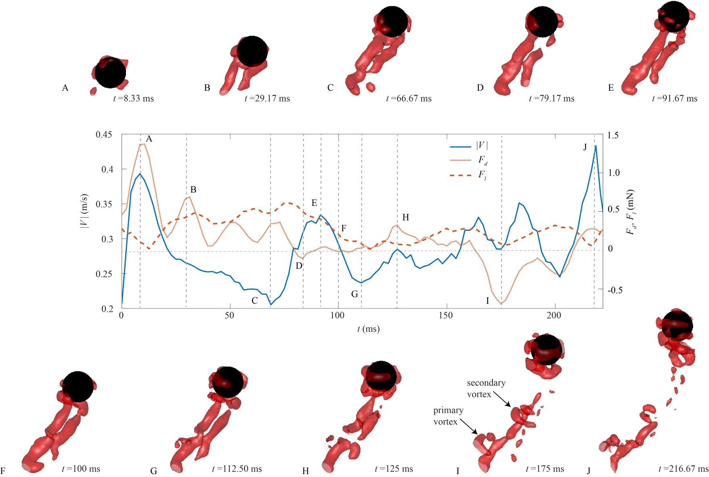

Freely rising sphere wakes
Experimental characterization of three-dimensional wakes and forces around freely rising spheres using refractive-index-matched tomographic particle tracking.
PublishedInternational Journal of Multiphase Flow

Overview
Rising spheres produce complex three-dimensional wakes that modify both their trajectories and hydrodynamic loading. Refractive-index matching allows optical access to the flow near the moving body.
Experimental approach
Refractive-index matching, tomographic particle tracking velocimetry, three-dimensional wake visualization, and pressure and load inference.
Key result
The experiments examine how increasing sphere diameter changes trajectories and wake organization.
Figures and videos

